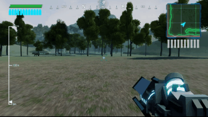
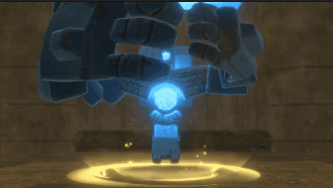
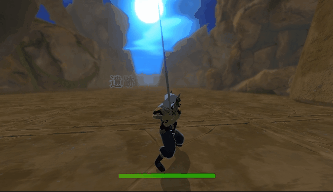
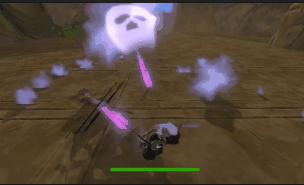

20分でわかる！
動画編集ソフト DaVinci Resolveの使い方
無料で使えるのに高機能な動画編集ソフト「DaVinci Resolve」の紹介を紹介します。
インストールして初期設定を行いましょう！
画面構成・UIの説明、素材となる動画データの読み込み、カット編集のやり方を解説します。
編集した動画を出力する方法を解説します。
動画にテロップを入れる方法を解説します。
テロップを入れる方法は何種類かありますが、この動画では「Text+」という機能を解説します。
よく使う、これだけは覚えておきたいショートカットキーです。
| キー | 説明 |
| Ctrl+B | クリップの分割 |
| Delete | リップル削除（ギャップ（空白）を詰める） |
| Backspace | 削除（ギャップ（空白）は残す） |
| Space | プレビューの再生/停止 |
| L | 再生。2度、3度押すと早送りとなる |
| J | 逆再生。Lの逆 |
| Alt＋マウスホイール回転 | タイムラインの拡大/縮小 |
| マウスホイールドラッグ | タイムラインのスクロール |
| クリップをAlt押しながらドラッグ | クリップのコピー |
| Alt+Y |
カーソルより前方（右側）のクリップを全て選択する |
| Ctrl+Z |
アンドゥ（取り消し） |
| Ctrl+Shift+Z |
リドゥ（取り消しの取り消し） |
ここまでの内容が理解できていれば、プレイ動画や簡単なPVなら作れるはずです。
ここから先は、より凝った表現を行いたいときに必要となってくるテクニックを紹介します。
異なる2つの動画を切り替える際に、パッと切り替えるのではなく、なめらかに切り替えたり特殊効果と共に切り替えたりするエフェクトのことを「トランジション」と呼びます。
| Transitionなし |
Transitionあり  |
この動画では、トランジションの使い方を解説します。
ゲームのプレイ動画やPVを作る場合、ある場面で一時停止して解説などを行いたい場合があるでしょう。
このように、動画を一時停止する方法を解説します。
ゲームのプレイ動画やPVを作る場合、画面の一部を指し示したり拡大表示したりして、強調表示を行いたいことがあるでしょう。その様々なやり方を解説していきます。
このように画面の一部を拡大表示するやり方を解説します。
カーソルなどの画像を出して、画面の特定の部分を指し示す方法を解説します。
動画内で使っている指の画像はこちらです：


四角い枠で囲む表示のやり方を解説します。

画面の一部を除いて暗くグレーアウトさせる方法を解説します。